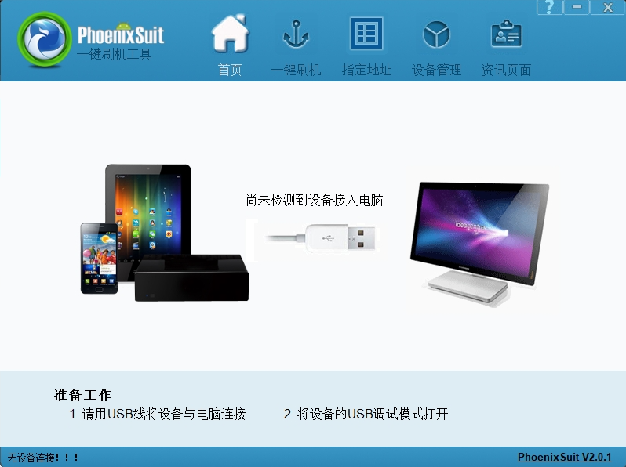

V316 烧录方式¶
| 版本号 | 修订日期 | 修订内容 | 作者 |
|---|---|---|---|
| v1.0 | 2024/7/20 | 初始化版本 | 宋涛 |
一、概述¶
本文档介绍了针对 V316 机器的多种烧录方式，其大致分为PC端烧录和卡烧录两种，均在windows环境下进行。下述烧录方式所用的烧录软件均可在APST中下载。
二、PC端烧录¶
1、PhoenixSuit 烧录¶
1.1 概述¶
PhoenixSuit 是一款固件烧写升级工具，支持所有全志平台的固件烧写升级，支持烧写单个分区、保留数据升级、分区擦除升级、全盘擦除升级等功能。
1.2 使用¶
本文仅简单介绍烧录升级的一般步骤，指定地址烧录方式不做说明。用户双击打开 PhoenixSuit 软件，软件界面示意图如下：

一般流程：
-
程序启动后默认处于客户区的一键刷机界面。
-
用户点击浏览按钮，进入文件选择窗口，并找到指定名为 XXX.img 的固件文件并选中。
-
确认浏览按钮左边显示框为指定目录下的固件，并在下方选择对应的烧写升级模式，默认选择全盘擦除模式。
-
将需要升级的设备连接至电脑，连接后软件可识别设备并在首页页面显示设备已成功连接。
-
点击立即升级按钮，烧录升级。
如果升级失败，可以使用强制模式的方式来烧写固件，具体步骤：
- 选择相应的固件文件。
- 长按电源键10秒以上来关掉设备电源。
- 松开电源键，按下任意一个非电源键并且不要松手。
- 将需要升级的设备连接至电脑。
- 短按电源键5到10次。
- 松开所有的按键，设备将会进入自动升级。
- 如果设备未进入自动升级，请尝试重复上述步骤。
设备未连接场景：

设备已连接场景：
烧录升级场景：

2、PhoenixUSBPro 烧录¶
2.1 概述¶
PhoenixUSBPro 是一款多路并行烧录固件工具，支持最多8台设备同时进行烧录，以此提高量产效率。通过切换功能，PhoenixUSBPro支持多路KEY擦除，可清除由DragonSN烧写的KEY，支持最多8 台设备同时进行擦除，以此提高擦除效率。
2.2 使用¶
三、卡烧录¶
1、PhoenixCard 烧录¶
1.1概述¶
PhoenixCard 软件用于将待量产的固件通过 SD卡（SD存储卡，英文全称为Secure Digital Memory Card，简称为SD卡）读卡器写入 SD 卡中。用户可以选择不同的模式将SD卡烧写成量产模式或者是启动模式，烧写完成后可以用烧写好的SD卡来进行设备量产或者启动。
所谓量产模式（量产卡），即把卡插进设备，固件会自动烧到 NOR Flash 上。把量产卡拔出来，设备用NOR Flash上的固件启动，因此量产卡可以重复烧录多台设备。
所谓启动模式（启动卡），即插入设备不再拔出，固件始终在启动卡上，后续将始终用这张启动卡启动。若卡被拔出，设备将无法正常启动。
1.2 使用¶
本文仅简单介绍卡烧录升级的一般步骤。用户双击打开 PhoenixCard 软件，软件界面示意图如下：
一般流程：
-
双击打开 PhoenixCard 软件，点击软件页面左上角的“固件”按钮，并选择指定的固件文件（XXX.img文件）。
-
将SD卡插入读卡器，并把读卡器插入电脑。
- 查看软件页面列表框是否显示SD卡对应的盘符，没有则表示电脑未识别SD卡，重新检查连接。
-
在软件页面列表框勾选SD卡对应的盘符
-
选择需要制作的卡，在制作卡的种类栏选择量产卡或者启动卡
- 点击烧卡按钮，查看输出信息框的打印信息，确认烧写是否成功
- 烧写成功则可以将卡取下插入设备进行升级
- ......
2、OTA升级¶
2.1 概述¶
将固件文件复制到SD卡，再把SD卡插进设备，以SD卡为媒介，进行OTA升级，固件自动会从SD卡下载到NOR flash上。
2.2 使用¶
一般流程：¶
-
把SD卡插入读卡器，同时把读卡器插入电脑。
-
电脑上打开SD卡目录，将指定的固件文件(XXX.img文件)复制到SD卡的根目录。
- 取出SD卡，并将SD卡插入设备，并启动设备。
- 设备开机后会跳出弹框，询问是否进行OTA升级，点击确定。
- 升级时，SD卡将固件转移到设备的 NOR Flash 上。
- 升级完毕后，即为新固件系统。